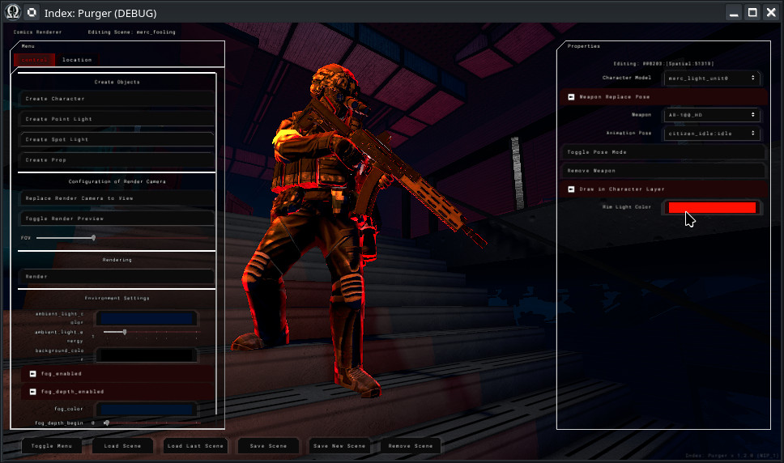
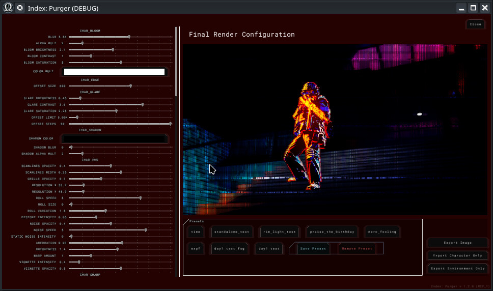
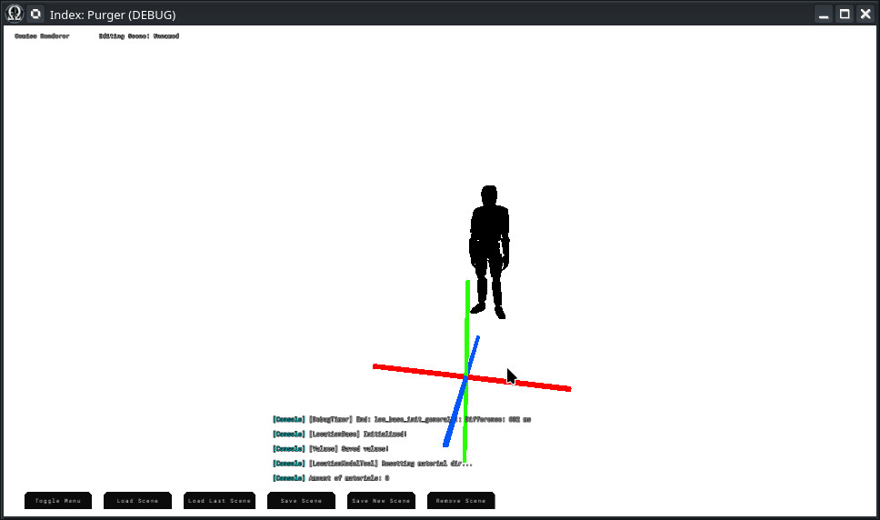

Module: comics_renderer
Documentation last edited: October 22, 2025 at 10:46 UTC
Description


Итак... Короче говоря... Почему эта штука существует? Ну, я пытался работать с Blender и GIMP, получил неплохие результаты... а также жёсткую боль в заднице в следующие моменты:
- Файлы .blend и .xcf занимают много места
- Это болезненно медленно
- Сложно редактировать позже
- И так далее...
Comics Renderer должен быть "easy-to-use" инструментом для рендеринга персонажей на любых локациях с ультимативной возможностью вернуться назад и отредактировать это позже. Эта игра имеет в себе комиксы, которые используют много "glitch" эффектов, которые потенциально превратят это в своего рода "glitch-art." Он очень быстрый, разделяет окружение/персонажа по отдельным слоям, управляет рендер-камерами и освещением, обрабатывает multi-pass рендеринг с "Shader Layers" и имеет множество опций для экспортируемых изображений.
Алгоритм инструмента
- Настройка сцены
- Загрузка локации
- Размещение персонажей и пропсов
- Настройка освещения
- Позирование персонажей
- Использование IK контролов для easy позиционирования конечностей
- Использование редактирования на уровне костей для fine tuning их трансформов
- Использование существующих анимаций, если нужно
- Композиция камеры
- Позиционирование рендер-камеры
- Настройка Field of View
- Превью рендер-снимка
- Рендеринг
- Конфигурация пост-обработочных эффектов Shader Layers
- Использование пресетов, если нужно
- Экспорт изображений (полное, только персонаж, только окружение)
Иерархия скриптов
UI
├── comics_renderer_UI_main.gd (Главный UI)
│ # - Обрабатывает весь UI, который ты можешь видеть в Comics Renderer, просто соединяется со всеми этими узлами
│ # и работает с ComicsRendererControl
Помощники
├── camera_control.gd (FPS-стиль Noclip камера)
│ # - WASD, ПКМ для осмотра
├── comics_renderer_hit_body.gd (Hit Body свойство, используемое для всех объектов в сцене)
│ # - Имеет множество handy информации о выбранных объектах, полезно для настройки gizmos
├── comic_scene_file.gd (Файл сохранения)
│ # - Файл сохранения, который содержит всю информацию об этом рендере сцены
├── shader_layers.gd (Shader Layers для обработки сырых рендеров)
│ # - Комплексный массив shader слоёв, которые контролируют внешний вид финального рендера
├── text_log.gd (Маленький скрипт для консольных логов)
│ # - Заставляет консольные логи исчезать со временем
Узлы
├── bone.gd (Кость персонажа)
│ # - Обеспечивает контроль кости персонажа, если персонаж имеет активный pose-mode
├── character.gd (Персонаж)
│ # - Персонаж, загружает модель, добавляет некоторые контролы для pose-mode, смены моделей и т.д.
├── IK_control.gd (SkeletonIK для Ног/Рук)
│ # - IK контроль для easier контроля ног/рук, maybe даже оружия
├── loc_obj.gd (Часть локации)
│ # - Вспомогательный скрипт, который позволяет редактировать меши локации (блокауты/пропсы/комбинированные)
├── point_light.gd (OmniLight с любовью)
│ # - Маленькая красивенькая OmniLight :)
├── prop.gd (LocationProp с дополнительными шагами)
│ # - Скрипт типа пропа, который позволяет тебе спавнить свои собственные пропсы для добавления в твои рендеры
├── render_camera.gd (Камера для установки позиции рендеринга)
│ # - Объект позиционирования рендер-камеры, который помогает настроить камеру для твоего будущего рендера
├── spot_light.gd (SpotLight)
│ # - Маленькая красивенькая SpotLight :)
Ядро
├── comics_renderer.gd (Главный скрипт рендеринга)
│ # - Гигантский ебучий рендерер, вот всё, что я могу сказать, адская кухня происходит здесь
│ # - Управляет "comics_renderer_control.gd" для взаимодействия с UI/рендерингом
│ # - И эта штука вызывает сам рендерер много
│ # - Это не хорошо, потому что это должно было следовать принципу "call down, signal up"...
│ # Но ох да...
│ # - Контролирует "camera_control.gd" для добавления FPS-подобной noclip камеры с simple WASD+ПКМ управлениями
│ # - Использует "render_camera.gd" для настройки позиционирования камеры
│ # - Работает с "shader_layers.gd" для огромным количеством пост-обработки
│ # - Интерфейсирует с "comics_renderer_UI_main.gd" для UI
└── comics_renderer_control.gd (Клей между UI и рендерером)
│ # - Специальный singleton класс, который помогает сделать намного легче общение между
└ # узлами, объектами, UI и главным рендерером. Короче, просто конфигурирующий singleton...
Как использовать comics renderer
Перейди в локацию
comics_renderer
.

Используй управления для навигации:
WASD - Летай вокруг
Space - Летай вверх
Левый Control - Летай вниз
Правая Кнопка Мыши - Поворот вида
Нажми "Toggle Menu", чтобы увидеть больше свойств для контроля.

Есть следующие вещи, которые ты можешь делать:
- Нажми "Location" и выбери одну из них для загрузки как сцены
- Создай несколько персонажей, источников света, пропсов
- Нажми на персонажей или другие объекты для настройки
- Если ты переключишь "Pose Mode" персонажа, это позволит тебе изменить их позу
- Нажми "Replace Render Camera to View", чтобы установить рендер-камеру в твой текущий вид
- "Toggle Render Preview", регулируй Field of View согласно твоим needs
- Ты можешь дополнительно настраивать ambient light или fog
- Никогда не забывай нажимать "Save Scene", чтобы сохранить твою сцену, конечно

- Нажми "Render", когда ты закончил позиционировать свою сцену

- Измени настройки пост-обработки
- Используй пресеты, если нужно
- Экспортируй
Имей в виду: Тебе может потребоваться пере-рендерить много раз, чтобы изменить настройки освещения, чтобы они выглядели круто с пост-обработкой.
General Information
Root directories list
assets, docs, src
Nodes
comics_renderer
camera_control
shader_layers
text_log
ComicsRendererControl
comics_renderer_UI_main
bone
character
IK_control
spot_light
render_camera
prop
loc_obj
point_light
Classes
Resources
Other Scripts
None